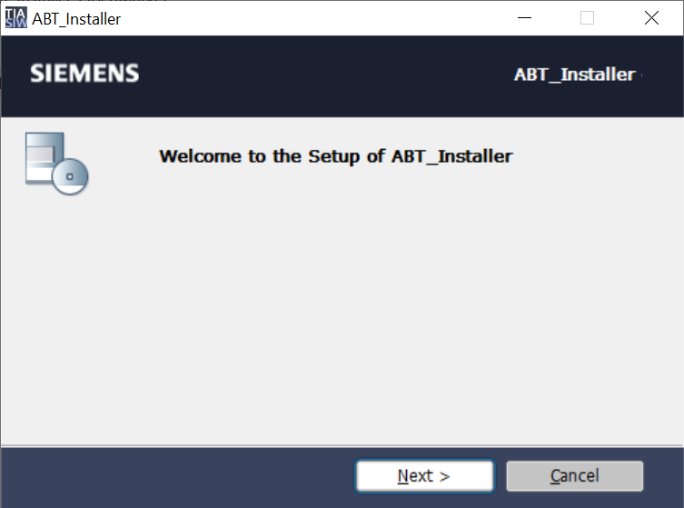
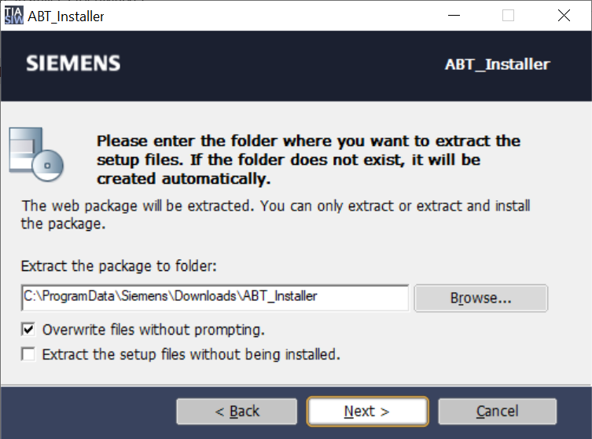
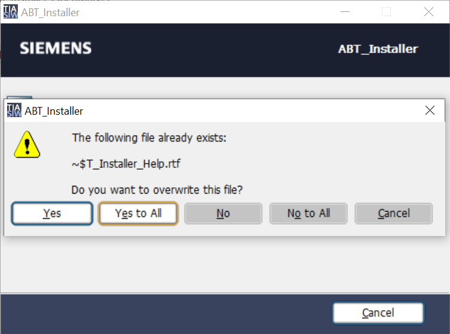
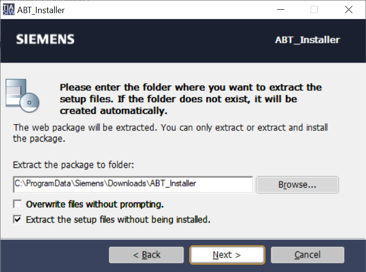
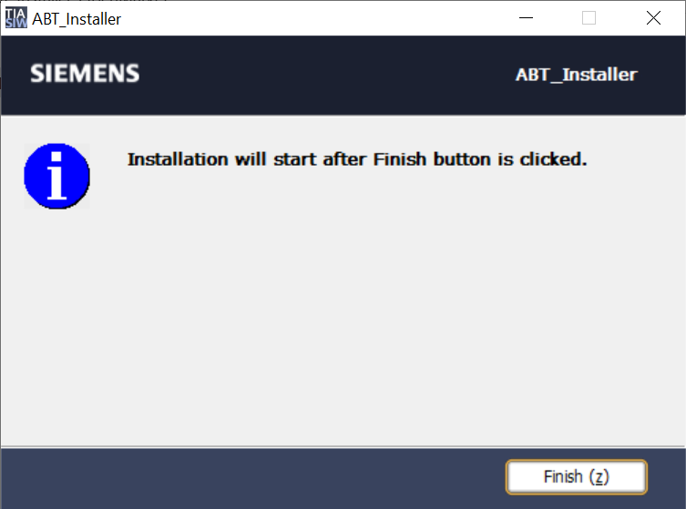

在线ABT安装程序安装包
完成以下步骤以在您的计算机上提取 ABT 站点和 ABT Pro 安装程序安装包及其库：
- If you are installing ABT Site or ABT Pro for the first time, you need to copy the ABT_Installer.exe file from the common server location SIOS to your machine.
- To launch the ABT Installer, double-click on ABT_Installer.exe file from the location where you have downloaded ABT_Installer.exe setup file.
For example, D:\ABT Installer setup\ABT_Installer.exe. The following dialog box displays.
- Click Next.
- Choose the required option from the following dialog box:

- To change the default extraction path of ABT Installer setup package, click Browse and then choose the desired path.
- To overwrite the already existing files, select the Overwrite files without prompting checkbox and click Next. Otherwise, the following dialog box displays asking you to overwrite or not, when you click Next.

Click Yes to overwrite all the extracted files individually.
Click Yes to All to overwrite all the extracted files at once.
Click No to deny overwriting all the extracted files individually.
Click No to All to overwrite all the extracted at once.
Click Cancel or X on top to close the dialog box. - To extract the ABT setup package but not install it, complete the following steps:
a. Select the Extract the setup files without being installed checkbox and click Next.
- b. To open the folder where the setup files are extracted, select Open the extraction location and click Finish (z).
- Click Finish (z).

- The ABT Installer setup extracts the content of ABT Installer package that is required to install ABT Site and ABT Pro tools.
- The ABT Installer’s Welcome dialog box is launched. For more information about installing ABT Site and ABT Pro, see Installing ABT Site and ABT Pro topic.